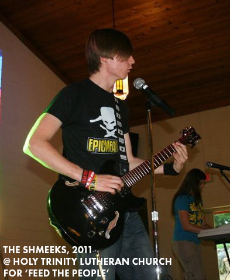
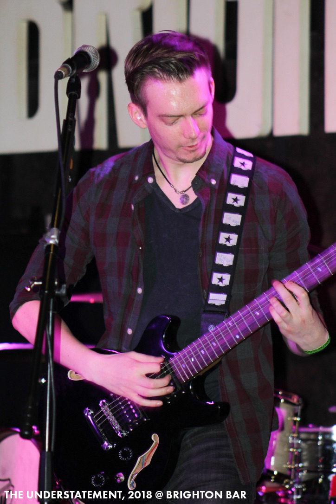

Hi! My name is AJ. I'm currently going to NJIT for a M.S. in Information Systems. My goal is to become a web developer.
I'm also in two bands! I'm in an up and coming bar band that covers pop punk and 90's alternative called Wake up, Paul!. I also have a pop punk solo project called Faulty Parachute
I started playing guitar in 2009, a solid 19 years ago!!! I bought my first guitar after saving up lunch money for half a year and essentially starving myself since my parents didn't want to buy me one. That first guitar ended up being a First Act, which can be seen below.
A few years later, my Dad decided to help me out and got me an amp and a new guitar! My first amp was an AC30, which I miss greatly. My second guitar was a Dean Bocca, which I named Jasmin. She is still my main guitar to this day.
 As for the present, Wake up, Paul! will eventually write originals once we get our bar sets down. I have various songs in the works for Faulty Parachute, so keep a lookout here!